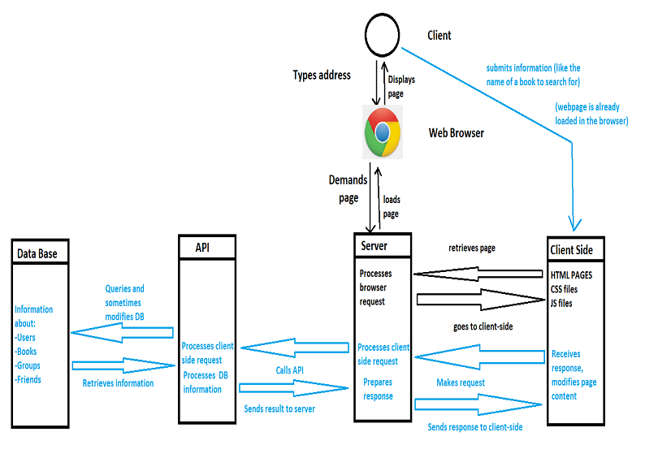

This document's purpose is to present and explain the structure and functions of BookWormhole.
Also, it will provide the user with a basic tutorial.
Book Wormhole allows the user to create an account and log in. An account is necessary to use the website. The user can also edit his account information at any given time.
Book Wormhole allows its users to search for books by title, author, or genre. Also it provides the user with recommendations: high rated books of a certain category (genre).
Users are provided information about the books, which includes: title, author, rating, genre(s), number of pages, publisher, edition, etc. Also they can view a list of reviews given by other users.
The user may save books in his/her own library (the "myBooks" page) and remove them, if he/she sees fit.
Once the user has added a book, they may rate it and give details about their progress ("Want to read", "At page 200", "Finished", etc). The user can also write a review of the book.
A user can search for other users to view their book library and activity. If a user is interested in the activity of other users, he/she can save them in the frinds list. The friends list allows a user to quickly access other users, without needing to do a search every time.
Every user can create or join a group. Groups are the perfect environment for users to share their reading experience. Every member of a group can suggest books for the group to read/discuss, but only the group owner/admins may add a suggested book to the group's activity.
Groups can also be used for educational purposes: a teacher may create a group for their class, add books and monitor the students' reading activity.
The website provides its users with statistics about their reading activity. Statistics can be exported in three formats: minimal, CSV and DocBook.
In order to access Bookwormhole, you simply need to open an Internet browser and type in the folllowing address: localhost:3000/BookWormhole
This will take you to the site's home page.
Creating an Account is easy. While in the homepage, click the "Register" button. This will take you to the register page. As an alternative, you can type localhost:3000/register in your browser to access the page directly. You will have to fill in the requested information and click on the "New Account" bookmark.
After you have an account, you will need to log in in order to use the website's features. This is done similarly to creating an account. You go to the Register page, but this time you simply fill in your account name, email and password and hit enter.
This function requires you to log into your account, otherwise you will not be able to access the webpages mentioned below.
Wiewing your account information can be done by clicking the "My Account" button, which is located in the top-right part of the screen on most of the site's webpages. It resembles the bust of a person, inside a yellow circle. Clicking that button will take you to the "account" page. Alternatively you can type in localhost:3000/account
This webpage shows information regarding your accunt and your book library.
In order to edit you account information, click the "Edit" button located in the center of the page. Alternatively, you can type localhost:3000/account-edit in your browser. This will take you to the "account-edit" page where you may upload a different account photo and add or change information about you. Once you're done, click the "Submit" button to implement those changes. If you've decided you don't want to change anything, click the "Back" button in your browser (the left arrow in the top-left corner of the screen).
This function requires you to log into your account, otherwise you will not be able to access the webpages mentioned below.
To search for books, simply click the browse button located in the top part of most pages. You will find three options: "Search", "Recommendations" and "Genre".
"Search" allows you to find books by typing in the title or author. The "Recommendations" page gives you suggestions based on the books you have added and rated so far. And finally, the "Genres" page allows you to search for the highest rated books based on their genre (Adventure, Romance, Science Fiction, etc).
If you foun a book you're interested in, simply click on the cover to go to that book's page. Once there, click the "Add to my books" button to add the book to your library. If you wish to remove a book form your library, go to that book's page again and Click the "Remove from my books" button.
This function requires you to log into your account, otherwise you will not be able to access the webpages mentioned below.
Once you've added a book, you may add reading progress, rate it and write a review. Reading progress is shown by choosing one of the three options located below the book's cover:
To rate a book, go to its page by clicking on its cover and click on the number of stars you wish to give it (1-5).
Writing a review is also done in the book page. Below the summary you have a yellow textbox with your user photo on its left. Click inside that area and write your review there. Once you're done, Click "Submit" to add it to the review list.
This function requires you to log into your account, otherwise you will not be able to access the webpages mentioned below.
To access your "friends" list, go to your account page: localhost:3000/account and click on the "Friends" button. Alternatively you can type localhost:3000/friends in your browser.
The "Friends" page contains a list of all the users you have as friends. Here, you may view each user's reading activity by clicking on the "BOOKSHELF" link.
If you want to search for users to add to yor "Friends" list, you simply need to type a user's name or email in the "Search" area and clock on the "Search" button. To add the user to your friends list, click on the "Add" button next to the user.
Every user can create or join a group. Groups are the perfect environment for users to share their reading experience. Every member of a group can suggest books for the group to read/discuss, but only the group owner/admins may add a suggested book to the group's activity.
Groups can also be used for educational purposes: a teacher may create a group for their class, add books and monitor the students' reading activity.
To search for groups or view the groups you're a part of, go to the "Community" page by clicking the "Community" button located at the top of most webpages. Alternatively, you can type localhost:3000/comunity in your web browser. To searh for a group, put the cursor over the magnifying glass and type the group's name, then press Enter. A list of matching groups will appear below. Clicking on any group's picture will send you to that group's page, where you can view its mebers and activity and also join the group.
Now, back to the community page, you have the option to create your own group by clicking the "Create Group" button. Once the group is created, you can edit it, by clicking on the "Edit Group" button (it resembles a purple pencil inside a square). This will take you to the "Group-edit" page, but only if you are the creator, or an administrator. Editing your group info works similarly with editing your user info.
BookWormhole is divided into three components: The Web Application, the API and the Database.
The web application contains two components: the client side and the server.
The client consists of a series of 20+ webpages written in HTML5 and styled using CSS. We have opted to use the JavaScript programming language in order to implement the functionality of the pages.
The client side communicates with the server by sending Ajax requests.
The BookWormhole server uses Node.js, a runtime environment also based on JavaScript.
The Data Base was created using SqLite and the SqLite browser: https://sqlitebrowser.org/. Its purpose is to store information regarding BookWormhole's users, groups and books.
The Data Base contains eight tables. Here is a schema of their structure and relations:
The API is a component which processes the requests received by the server. The API browses the database and extracts information, then processes it and offers it to the server, which in turn will send it back to the client side (the webpage that made the request, to be more precise).
We have opted to use the Goodreads API for our project : https://www.goodreads.com/api
The Goodreads API is free to use for software developers with a developer key.
The reason for this choice is that Goodreads is a website with similar functions to BookWormhole so it helps us process many of the server requests without needing to implement everything from scratch.
Limitations: the Goodreads API only allows one request per second. It will provide you with data from the goodreads website, but that data will only remain on our site for a maximum of 24 hours.
BookWormhole is a student project built for education purposes, so the request limit is not a significant disadvantage. Moreover, since we have our own database, the 24h limit does not apply.
Here is a schema of the project's behaviour:
